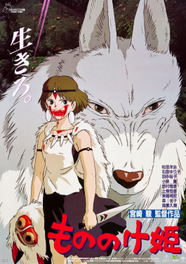
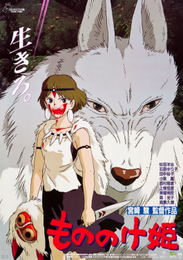
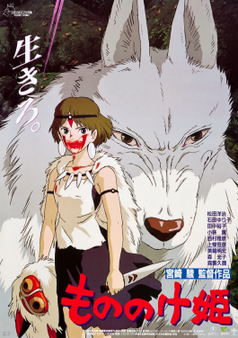
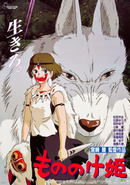

The Boy and the Heron is a deeply imaginative and emotionally layered animated
film directed by Hayao Miyazaki. The film presents a striking combination of personal grief and fantastical storytelling, creating a rich narrative that explores the journey of a young boy named Mahito. Following the death of his mother during an air raid in wartime Japan, Mahito is relocated to a quiet countryside estate where his father lives with his new wife, who also happens to be Mahito’s maternal aunt. This new life unsettles Mahito, and his emotional turmoil soon manifests in a strange and magical encounter with a talking heron that appears to taunt, challenge, and eventually guide him toward a mysterious tower on the property.
From this moment, the story transitions from a grounded historical reality into
a dreamlike and otherworldly adventure. Mahito enters a surreal dimension where
the rules of nature and logic bend. Time flows strangely, death and life
coexist, and mythical creatures share space with memories and representations
of Mahito’s own fears and desires. In this realm, Mahito is not merely a lost
child searching for comfort—he becomes a seeker of meaning, navigating a world
that reflects his internal struggle to process trauma, loss, and the changing
dynamics of his family.
The animation is breathtaking throughout. The natural world is portrayed with
great sensitivity, while the magical elements are rich with color, symbolism,
and an ethereal quality that reflects the emotional intensity of the
protagonist’s journey. The heron, who begins as a grotesque and unsettling
figure, eventually reveals layers of complexity, serving as both trickster
and guide. Other characters encountered along the way offer wisdom, resistance,
or companionship, each representing different facets of Mahito’s psyche and
his growing understanding of the world and his place in it.
Despite its fantastical appearance, the film maintains a tone of quiet sadness
and introspection. The pacing is meditative, allowing moments to linger and
build meaning slowly. This rhythm reinforces the emotional weight of Mahito’s
personal transformation and mirrors the gradual process of healing and
acceptance. There is no single antagonist or conventional conflict; instead,
the tension arises from Mahito’s internal battle with grief, guilt, and the
challenge of growing up in a world that no longer makes sense.
The film resists offering easy answers. Instead of tidy resolutions or dramatic
conclusions, it provides a mosaic of ideas and emotions that encourages
reflection. The world Mahito visits is not fully explained, its rules not
neatly outlined. It unfolds with a dreamlike logic that invites the viewer to
interpret it through their own emotional and imaginative lens. This approach
may be perplexing or even frustrating for some viewers, particularly those
seeking a more conventional or linear story. However, for those open to its
quiet mysteries and lyrical storytelling, the experience is profound and
lasting.
The Boy and the Heron stands as a powerful meditation on mourning and memory,
transformation and identity. It continues the legacy of Hayao Miyazaki’s
career, showing not only his unparalleled craftsmanship in animation but
also his enduring commitment to stories that explore the human condition
through magical realism. Though the film may mark a farewell for the legendary
filmmaker, it does not feel like an ending. It feels more like a passage, a
quiet invitation to continue wondering, feeling, and searching, much like
Mahito himself. The film leaves behind not certainty, but a sense of awe—a
reminder that even in sorrow, beauty and meaning can be found.
Howl’s Moving Castle is a richly imaginative and emotionally resonant
animated film directed by Hayao Miyazaki, based loosely on the novel by
Diana Wynne Jones. The story follows Sophie, a shy and self-effacing
young woman who works in a hat shop and leads a quiet, uneventful
life. Her world is turned upside down when she crosses paths with
the mysterious wizard Howl, an enigmatic figure known for his magical
powers and his elusive flying castle. Soon after their brief
encounter, Sophie is cursed by the Witch of the Waste, who transforms
her into an elderly woman. Unable to stay at home, Sophie leaves the
city and wanders into the countryside, eventually finding refuge in
Howl’s strange, walking castle.
The heart of the film lies in Sophie’s transformation—not just the physical
change brought on by the curse, but her emotional and psychological journey.
As an old woman, she finds a strength and confidence she lacked in her youth.
Her time in the castle introduces her to a strange and charming household,
including Calcifer, a fire demon who powers the castle, and Markl, Howl’s
young apprentice. These characters, though fantastical, all possess very human
vulnerabilities and desires. The castle itself, creaky and cluttered, functions
as both a mechanical marvel and a metaphor for Howl’s own fractured and elusive
personality.
Howl is introduced as a flamboyant and powerful wizard, feared and admired in
equal measure. However, as the story unfolds, it becomes clear that he is also
deeply insecure, constantly avoiding responsibility, and struggling with his
own inner turmoil. His refusal to take sides in the ongoing war reflects both
his disillusionment and his desire to protect the people he loves. Through
Sophie’s presence, he gradually begins to confront his fears and reengage
with the world around him. Their growing bond is tender and understated,
built not on grand declarations but on shared moments of vulnerability and
quiet trust.
Visually, the film is stunning. Miyazaki and Studio Ghibli create a world of
sweeping landscapes, bustling cities, magical contraptions, and skies filled
with floating ships and billowing clouds. The castle, with its creaking legs
and shifting rooms, is one of the most iconic settings in animated cinema.
Every frame is filled with detail, texture, and life. The animation is matched
by an exquisite score composed by Joe Hisaishi, which blends sweeping
orchestral themes with gentle, melancholic melodies that echo the emotional
depth of the story.
One of the most striking aspects of Howl’s Moving Castle is its portrayal of
aging and identity. Rather than treating Sophie’s curse as a purely negative
affliction, the film presents it as a catalyst for self-discovery. In her older
form, Sophie becomes bolder and more assertive, no longer burdened by the
insecurities of youth. Her outward transformation allows her inner self to
emerge more clearly. This theme of self-realization extends to other
characters as well, particularly Howl, who learns to stop running from his
responsibilities and accept the consequences of his actions.
The film also presents a poignant commentary on war and its impact on ordinary
people. Though the cause of the conflict is never fully explained, its
consequences are vividly portrayed—bombed cities, fleeing civilians, and the
emotional toll on those caught in the middle. Miyazaki uses the backdrop of war
not to glorify violence or heroism but to highlight the senselessness of
destruction and the importance of compassion and peace. This message, subtle
but powerful, underscores the emotional and philosophical weight of the story.
While the plot may feel opaque or loosely structured to some viewers, its
emotional logic is consistent and compelling. The narrative flows more like a
dream than a traditional adventure, filled with symbolic transformations,
unexpected detours, and moments of quiet introspection. Rather than pushing
toward a single climax or resolution, the story evolves organically, driven by
the characters’ choices and inner growth.
Howl’s Moving Castle is ultimately a story about love, courage, and the beauty
of imperfection. It celebrates the transformative power of empathy and the
resilience of the human spirit. Sophie and Howl are not flawless heroes, but
deeply relatable people trying to navigate a chaotic world. Their relationship
is not built on fairy-tale tropes but on mutual understanding and emotional
honesty.
As a work of art, the film stands as one of Miyazaki’s most ambitious and
thematically rich creations. It balances whimsy and gravity, magic and realism,
personal struggle and broader societal issues. Every viewing offers something
new to discover, whether it’s a small character moment, a detail in the
background, or a shift in tone that reveals deeper meaning. It is a film that
lingers in the imagination long after it ends, reminding us that even in the
most uncertain and unpredictable circumstances, kindness, love, and courage
can move mountains—or castles.
Princess Mononoke is a sweeping, visually majestic, and philosophically
profound animated film that stands as one of Hayao Miyazaki’s most ambitious
and thematically complex works. It is a story that transcends the boundaries
of fantasy, rooted in mythology and ecological consciousness, and told with a
fierce emotional intensity that challenges and rewards its viewers in equal
measure.
The film is set in a mystical reimagining of Japan’s Muromachi period, a time
of social upheaval and environmental transformation. The protagonist, Ashitaka,
is a young prince from a remote village who becomes cursed by a demon boar
while defending his people. This curse grants him supernatural strength but
promises a slow and painful death. In search of a cure, Ashitaka sets off on a
journey toward the West, where he hopes to discover the origin of the demon
and find a way to lift his affliction.
What begins as a personal quest quickly expands into a larger, morally
intricate conflict between the forces of industrialization and the spirits of
the natural world. Ashitaka finds himself in the middle of a bitter struggle
between the people of Iron Town, led by the formidable Lady Eboshi, and the
gods and spirits of the forest, who are led in part by the fierce and enigmatic
San, known as Princess Mononoke. San is a human girl raised by wolves who has
rejected human society and fights with unwavering devotion to protect the
forest and its ancient spirits.
Unlike traditional stories that divide characters into clear categories of good
and evil, Princess Mononoke refuses to simplify its moral landscape. Lady
Eboshi is portrayed not as a villain but as a visionary leader who empowers
outcasts, lepers, and former prostitutes, giving them a sense of dignity and
purpose. Her desire to develop Iron Town and harness the power of the forest
is driven by compassion for her people, not blind greed. San, too, is more
than a symbolic guardian of nature; she is torn between her human origins and
her loyalty to the wolves who raised her, struggling with identity and
belonging. Ashitaka, caught between both sides, embodies a rare voice of
empathy and balance. His goal is not to win the war but to understand its
roots and seek reconciliation where others see only opposition.
The forest itself is a character in its own right—lush, mysterious, and filled
with creatures both wondrous and terrifying. From the giant boars to the divine
stag-like Forest Spirit, nature is depicted as beautiful, sacred, and
sometimes cruel. The animation brings this world to life with extraordinary
detail and artistry. Every frame is filled with texture, light, and emotion,
from the haunting stillness of the forest to the harsh clamor of Iron Town’s
machinery. The contrast between the organic and the mechanical is rendered
not just visually but emotionally, capturing the tensions of a world
undergoing irreversible change.
The film’s score, composed by Joe Hisaishi, deepens the emotional resonance of
the narrative. The music moves between haunting melancholy and soaring
grandeur, reflecting the story’s emotional weight and spiritual depth. It
enhances moments of intimacy and vastness alike, helping the viewer feel the
personal stakes of the characters as well as the larger, almost mythic forces
at play.
At its core, Princess Mononoke is a meditation on the destructive and
redemptive capacities of humanity. It explores the costs of progress and the
fragility of harmony between human beings and the natural world. It presents
a world where there are no easy solutions—only difficult compromises, painful
losses, and the hope of coexistence. The film does not conclude with a
triumphant victory or a total restoration of balance. Instead, it ends with
a fragile, tentative peace, suggesting that healing is possible but must be
actively pursued with care, humility, and mutual understanding.
Miyazaki’s storytelling is uncompromising. He challenges the audience to engage
with difficult questions about violence, sacrifice, and the consequences of
human ambition. The film resists sentimentality even as it evokes deep
emotion, and it offers no simplistic resolution to the conflicts it presents.
This commitment to moral ambiguity and emotional honesty gives the film a
timeless quality and elevates it beyond most animated or live-action
storytelling.
Princess Mononoke is more than a fantasy epic—it is a philosophical journey, a
political allegory, and a deeply human story of connection and struggle. It
resonates on multiple levels: as an environmental warning, a coming-of-age
tale, and a spiritual parable. It speaks to the viewer not just through plot or
action but through a sense of awe and reverence for the living world and the
mystery of existence. It reminds us that the line between civilization and
nature is not fixed but shifting, and that our choices determine whether that
line becomes a boundary or a bridge.
In the landscape of animation, Princess Mononoke stands not just as a
masterpiece of the medium but as one of the most important cinematic works
of the modern era. It is a film that does not pander or simplify, but trusts
its audience to grapple with complexity. It leaves a lasting impression not
through answers, but through questions—questions that linger long after the
credits roll, urging us to look at our world, and our place in it, with new
eyes.